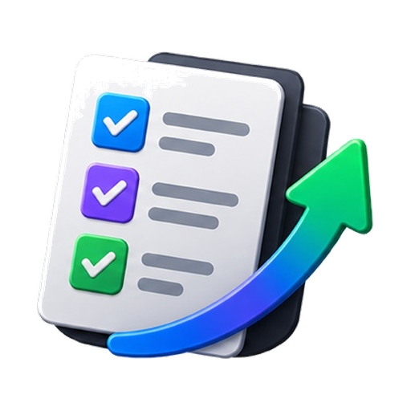

Reusable project state
Make the project easy to resume.
This template turns a project checkpoint into a quick-glance dashboard: current state, evidence, risks, workflow health, and the next prompts or actions.

Project workflow
Reusable project state
This template turns a project checkpoint into a quick-glance dashboard: current state, evidence, risks, workflow health, and the next prompts or actions.